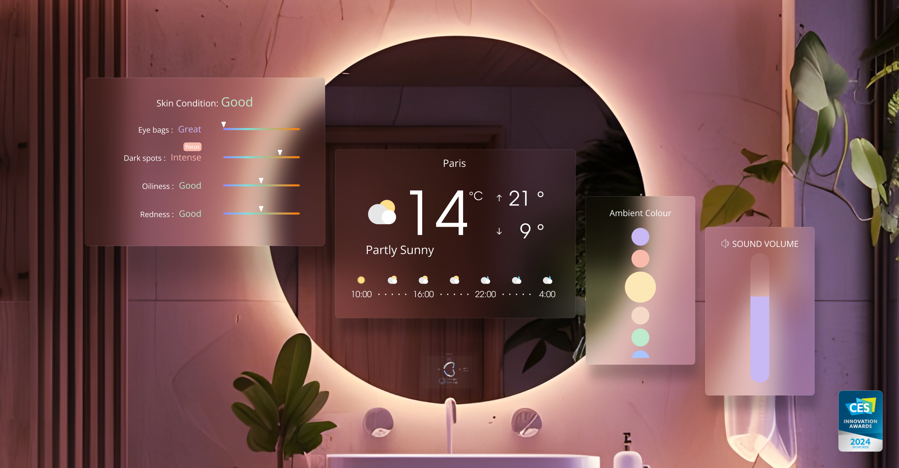
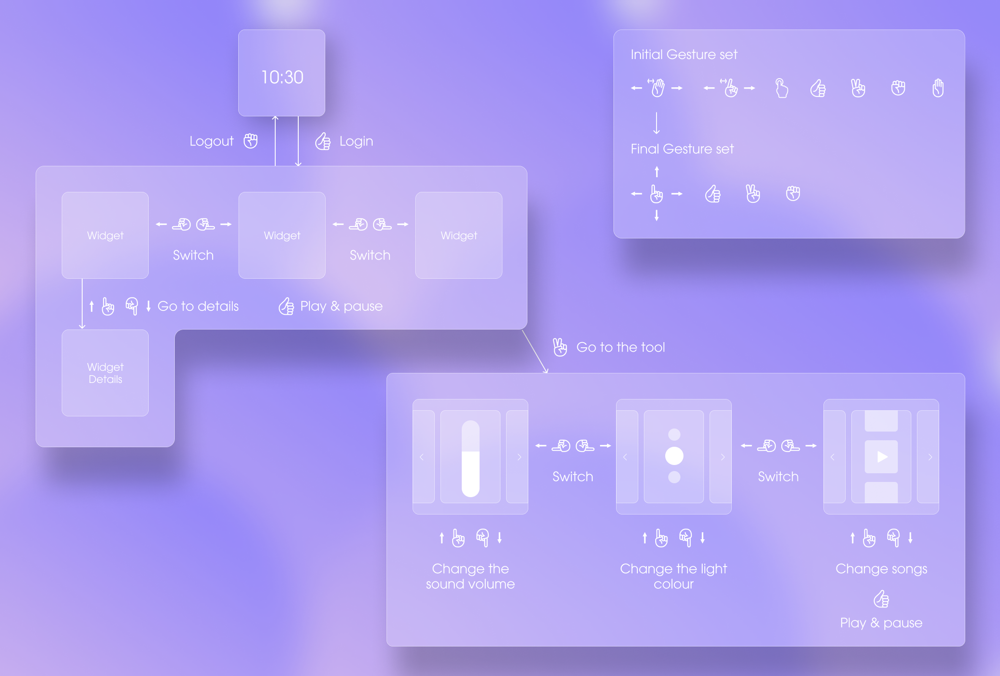
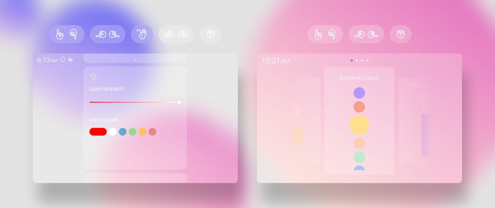

BMirror
An award winning smart mirror
to improve your health and mental well-being.
The bathroom is the perfect place for self-care, we at Baracoda created a smart mirror as its wellness hub. It connects devices like toothbrushes and scales, offering health and wellness features to streamline your bathroom routine.
One standout is touchless navigation, keeping the mirror smudge-free!
Our mirror, featuring the mood-detecting ‘BMind’ for mental well-being, earned the CES Innovation Award 2024🏆
My role was creating the user experience with complete new navigation system which was touchless, the most challenging UX job I have ever done in my life🔥
One standout is touchless navigation, keeping the mirror smudge-free!
Our mirror, featuring the mood-detecting ‘BMind’ for mental well-being, earned the CES Innovation Award 2024🏆
My role was creating the user experience with complete new navigation system which was touchless, the most challenging UX job I have ever done in my life🔥

PROJECT TYPE
Smart Mirror
COMPANY
Baracoda
MY ROLE
Product Designer
TEAM
1 Product Manager
1 AI Engineer
2 Hardware Engineer
2 Software Developer
REFERENCE
Check HERE
A Start of the journey
Two months after the project’s initial launch, We showcased a prototype at the CES 2023. We knew very much the mirror prototype was unpolished. However, the early feedback provided valuable insights into usability challenges.🔥 Frustration with the gesture based control
It’ stemmed from technical issue and usability challenges. The AI struggled to reliably recognize gestures, causing user frustration. Additionally, users often had trouble remembering the gestures, frequently asking, "Wait, what’s the gesture for closing the tools?"🔥 Interface navigation Complexity
The mirrored surface added another layer of complexity. Reflections made on-screen content harder to read. Gesture navigation also needed a fresh approach for the interface, as smartphone models were too complex.why?
Selecting the right gestures
We needed a set of gestures that would strike a balance between ease of use, memorability, and high recognition accuracy by the AI. After a large amount of testing, we selected 4 primary gestures that were simple, easy to remember, and achieved a high recognition rate.


I simplified the navigation architecture by reducing the number of gestures available on a single screen. Additionally, I introduced an on-screen gesture guide to help users quickly recognize and select the appropriate gesture.

To make learning easier, I developed an interactive tutorial where users could check and practice the gestures whenever necessary. This tutorial helped users become more confident in navigating the smart mirror.
Voilà, we can control the mirror without touching!